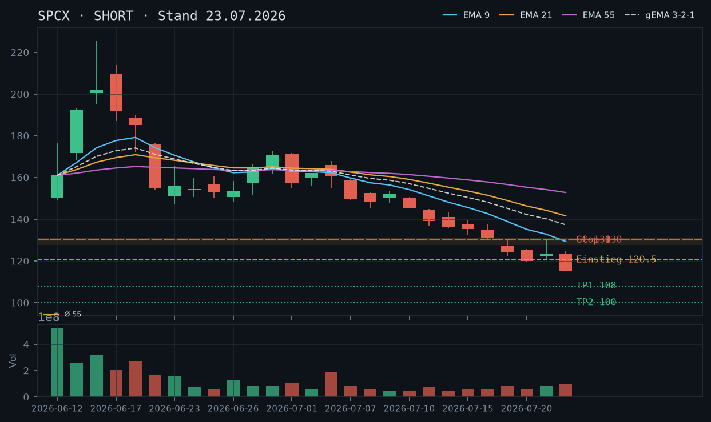
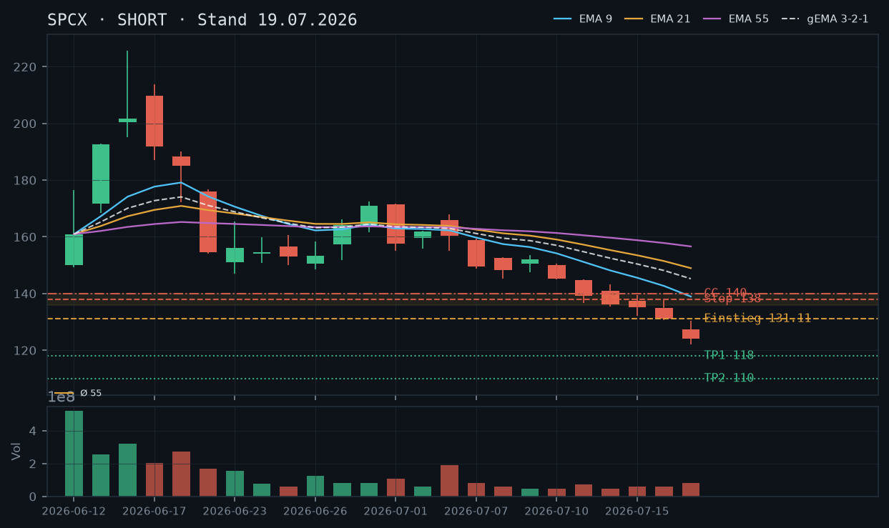
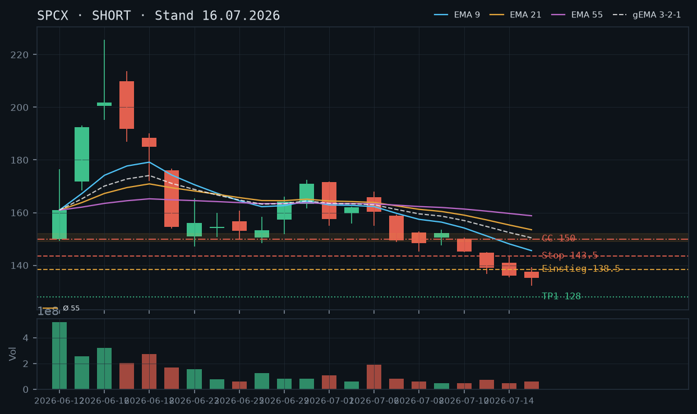
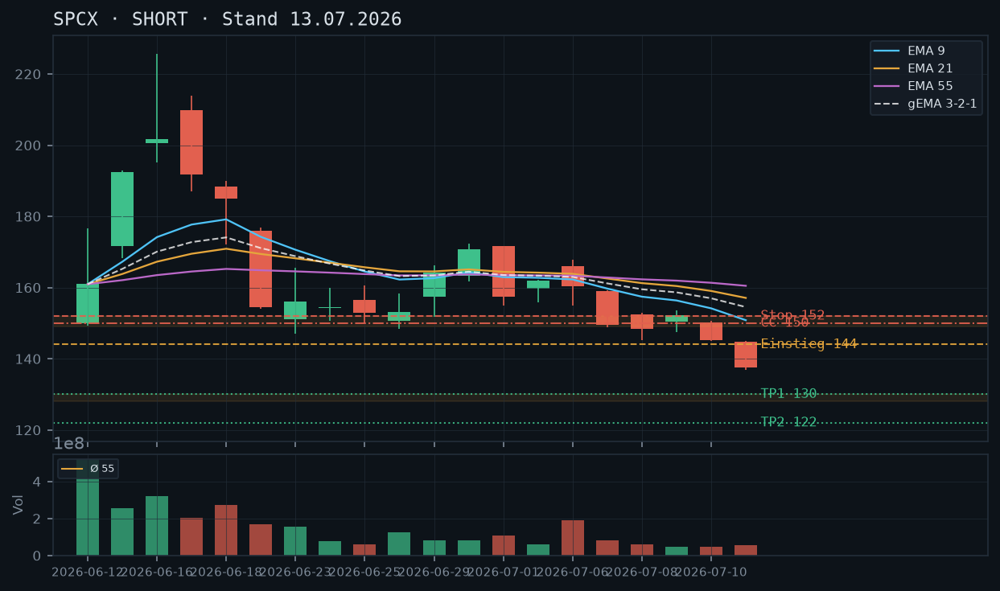
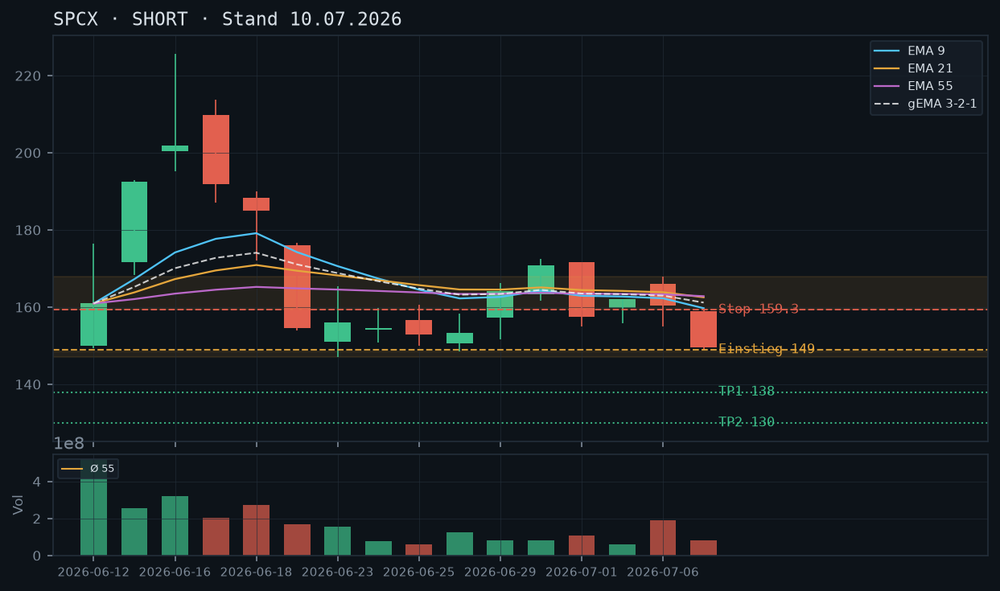
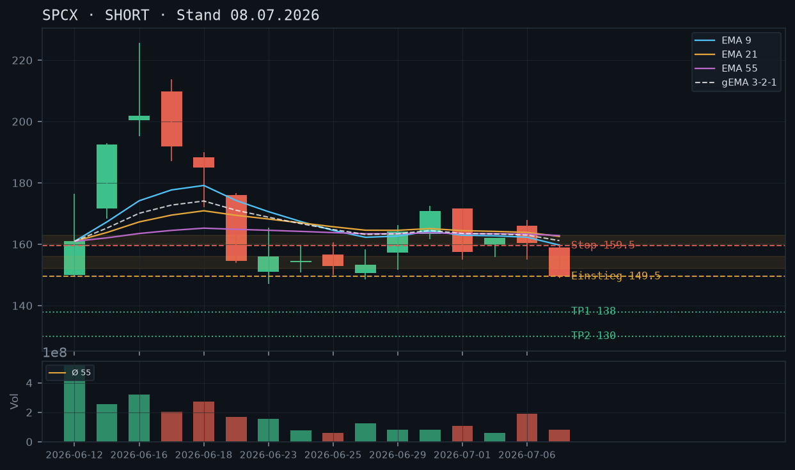

SPCX befindet sich weiterhin im freien Fall – neue ATLs täglich, EMA-Fächer vollständig bärisch, kein technischer Support in Sicht; der bestehende Short Put 100 / 31.07. liegt mit 16,2% Puffer komfortabel, sollte aber engmaschig überwacht werden.

SPCX setzt den intakten Abwärtstrend mit einer weiteren Eskalationsstufe fort: Am 22.07. fiel die Aktie auf ein neues ATL von 115,19$, der Schlusskurs lag bei 115,26$. Seit dem All-Time-High bei 225,64$ (16.06.) hat der Kurs in weniger als sechs Wochen knapp 49% verloren. Die Trendstruktur zeigt eine Serie aus tieferen Hochs und tieferen Tiefs ohne eine einzige bestätigte Erholung: Jedes Intraday-Pullback-Hoch wurde direkt danach unterboten. Der aktuelle IBKR-Kurs von 116,21$ signalisiert eine Mini-Erholung (+0,82%) vom gestrigen Tief, jedoch ist dies nach der Kerzenlage kein Reversal-Signal.
Die Kerze vom 22.07. ist eine große Bearish-Candle mit langer unterer Lunte (Tief 115,19$, Close 115,26$) bei erhöhtem rel. Volumen (~1,36x Schnitt geschätzt – exakter Wert: das vol_schnitt_55 ist in diesen frühen Daten nicht berechnet, Volumen 92,7 Mio. ist das höchste seit 17.07. mit 83,7 Mio.). Die Lunte deutet zwar auf kurzfristigen Kaufdruck am Tief, doch der Close nahe dem Tagestief zeigt, dass Käufer die Kontrolle nicht halten konnten. Kein bullisches Reversal-Muster erkennbar – weder Hammer noch Bullish Engulfing. Die Mini-Erholung am 23.07. (IBKR +0,82%) wirkt wie ein technisches Bounce ohne Substanz.
Der EMA-Fächer ist vollständig bärisch und beschleunigt sich: EMA9 (129,30$) > EMA21 (141,61$) > EMA55 (152,78$) – alle fallend, der Kurs liegt mit 115,26$ deutlich unter dem niedrigsten EMA (EMA9 bei 129,30$), Abstand ca. 14 Punkte bzw. ~12%. Der gema_321 steht bei 137,32$ und fällt steil – auch dieser liegt weit über dem Kurs. Kein Kompressions-Artefakt, keine Annäherung der EMAs an den Kurs. Die Lage hat sich gegenüber der 19.07.-Analyse (EMA9 138,94$) weiter verschlechtert: EMA9 ist seit dann um weitere 9,6 Punkte gefallen, der Kurs aber um ~7,7 Punkte. Die relative Überdehnung unter den EMAs bleibt extrem und signalisiert Fortsetzung des Trends ohne nahe Stabilisierung.
| Richtung | Short |
| Einstieg | 120,00–121,00 (Rebound-Verkauf an EMA-fernem Widerstandsniveau / Pivot-Hoch 21.07. bei 129,88$ ist zu weit entfernt; nächster relevanter Bereich ist das gestrige Open bei ~123,29$ bzw. Intraday-Widerstand 120–122$) |
| Stop | 130,00 (über Pivot-Hoch 21.07. bei 129,88$ mit Puffer) |
| Ziel | 108,00 (Projektion: gemessene Bewegung aus letztem Leg / psycholog. 110$-Marke als erstes Ziel) / 100,00 (ext. Projektion / Strike des bestehenden Short Puts) |
| CRV | 2,0 : 1 (Ziel 1) / 3,3 : 1 (Ziel 2) |
Ein Cash-Secured Put ist auch am 23.07. kategorisch ausgeschlossen – unterhalb des aktuellen ATL bei 115,19$ existiert null Handelshistorie für eine technisch begründbare Supportzone, und das Andienungsrisiko in einem solchen Abwärtstrend wäre prohibitiv. Ein Covered Call bleibt das einzige vertretbare Stillhalter-Geschäft, aber: Da kein Aktienbestand (0 Stück laut IBKR) vorhanden ist, wäre jeder CC ein Naked Short Call mit unbegrenztem Verlustrisiko – expliziter Hinweis auf das veränderte Risikoprofil. Der bestehende Short Put 100 / 31.07. ist separat zu bewerten (siehe 'bestand').
| Geschäft | Covered Call |
| Strike | 130.0 |
| Puffer | 11.9 % |
| Zone | EMA9 bei 129,30$ / Pivot-Hoch 21.07. bei 129,88$ / Widerstandscluster 128–131$ |
| Verfall bis | 2026-08-01 (9 Tage – nächster Standard-Freitag nach 23.07. ist 25.07., übernächster 01.08., beide innerhalb 12 Tage) |
| Begründung | Der Strike 130$ liegt am oberen Ende des Widerstandsclusters 128–131$, der aus dem Pivot-Hoch 21.07. (129,88$) und dem fallenden EMA9 (129,30$) besteht. Der Puffer beträgt ~11,9% zum IBKR-Kurs 116,21$. ACHTUNG: Da kein Aktienbestand vorhanden, handelt es sich um einen Naked Short Call mit unbegrenztem Verlustrisiko nach oben. Prüfen in der Optionskette: Prämie am 130er-Strike (bei >10% OTM und hoher IV erwartet, aber manuell zu verifizieren), Bid-Ask-Spread (Liquidität bei dieser früh gelisteten Aktie tendenziell eng), ob Margin-Anforderungen für Naked Calls tragbar sind. Andienungsszenario bei einem CC wäre theoretisch akzeptabel (130$ wäre ein sehr gutes Abgabe-Niveau für Long-Halter), aber ohne Bestand nicht anwendbar. |
Bestand: Laut IBKR-Snapshot (11:38 Uhr, 23.07.2026): bestehende Position Short Put Strike 100$, Verfall 2026-07-31 (8 DTE), aktueller Optionspreis 1,42$, Abstand Strike zum Kurs 16,2%. Bewertung: Der Put 100$ liegt bei einem aktuellen Kurs von 116,21$ mit 16,2% Puffer komfortabel im OTM-Bereich. Selbst wenn der Kurs das gestrige ATL (115,19$) nochmals testet oder leicht unterschreitet, ist der Strike 100$ noch ~13% entfernt. Die Position ist kurzfristig nicht bedroht. HALTEN ist die Empfehlung, solange der Kurs nicht in Richtung 105–107$ fällt. Roll-Trigger: Unterschreitet der Kurs nachhaltig 108$, wäre ein Rollen auf einen tieferen Strike (z.B. 90$ oder 95$) zum nächsten Freitag (01.08. oder 08.08.) zu prüfen, um den Puffer wiederherzustellen. Bei Annäherung an 105$ (< 5% Puffer) defensiv schließen. Kein Aktienbestand vorhanden – ein Covered Call ist weiterhin nicht möglich.
Die Short-These aus den Analysen vom 13.07., 16.07. und 19.07.2026 wird vollumfänglich bestätigt und weiter eskaliert. Das in der 19.07.-Analyse genannte erste Ziel von 118$ wurde am 20.07. mit einem Close von 119,85$ fast punktgenau erreicht. Seitdem wurde dieses Level ebenfalls unterschritten: Am 22.07. markierte SPCX ein neues ATL bei 115,19$, Schlusskurs 115,26$. Das zweite Ziel der 19.07.-Analyse (110$) rückt in greifbare Nähe.
Die Trendstruktur ist weiterhin makelloser Abwärtstrend: Jedes Hoch liegt unter dem vorherigen, jedes Tief unter dem vorherigen. Konkrete Pivots der letzten Handelswochen: Hoch 21.07. bei 129,88$ → Tief 22.07. bei 115,19$. Kein einziger bestätigter Support existiert – wir befinden uns im Preisbereich, der für SPCX historisch nie existiert hat (IPO am 12.06. bei 150$, bisheriges Allzeittief täglich neu geschrieben). Das CC-Setup aus der 16.07.-Analyse (Strike 150$, Verfall 24.07.) ist wertlos verfallen oder mit maximalem Gewinn aus der Position geworden – der Kurs lag nie auch nur annähernd in der Nähe des 150er-Strikes.
Die Kerze vom 22.07. zeigt folgendes Profil: Open 123,29$ – High 124,77$ – Low 115,19$ – Close 115,26$. Die Kerze hat eine relativ kleine obere Lunte (~1,5$), einen großen Body (~8$) und eine minimale untere Lunte (~0,07$). Das bedeutet: Der Kurs eröffnete, machte ein kurzes Hoch, fiel dann fast linear auf das Tages- und ATL und schloss dort. Das Volumen mit 92,7 Mio. Aktien ist das höchste der letzten Woche und signalisiert Verkaufsdruck, kein kapitulatives Bottom (bei echter Kapitulation erwarte ich typischerweise eine große untere Lunte mit anschließendem Rückeroberungsversuch).
Die aktuelle IBKR-Erholung von +0,82% (ca. 0,95$ über gestrigem Close) entspricht einem technischen Bounce ohne Volumenbestätigung – kein Reversal-Signal. Ein valides bullisches Signal wäre erst ein Bullish Engulfing oder Hammer auf erhöhtem Volumen mit Close deutlich über 120$.
Der bärische EMA-Fächer hat sich seit der 19.07.-Analyse weiter verschärft:
Der Kurs (115,26$ Close / 116,21$ IBKR) liegt ca. 14 Punkte bzw. ~12% unter dem EMA9 – eine extreme Überdehnung. Historisch folgen solchen Überdehnungen kurzfristige Bounces (mean-reversion Richtung EMA9), aber im beschleunigten Downtrend können diese Überdehnungen wochenlang bestehen. Der EMA9 fällt aktuell mit ca. 3,2$ pro Tag – selbst ohne weiteren Kursrückgang würde er erst in ca. 4 Handelstagen auf ~116$ fallen. Das unterstreicht die Dominanz des Trends über technische Überverkauft-Signale.
Setup A – Bevorzugt: Rebound-Short (aggressiv)
Einstieg: 120,00–121,00$ (Limit-Short an Intraday-Widerstand, falls der aktuelle Bounce bis dorthin trägt)
Stop: 130,00$ (über Pivot-Hoch 21.07. bei 129,88$)
Ziel 1: 108,00$ (psycholog. Runde Marke, Konfluenz mit gemessener Bewegung)
Ziel 2: 100,00$ (psycholog. Major-Level, Strike des bestehenden Short Puts)
CRV: 2,0:1 (Ziel 1) / 3,3:1 (Ziel 2)
Begründung: Der aktuelle Bounce hat den Charakter einer technischen Gegenbewegung. Der Widerstandsbereich 120–122$ ist der erste relevante Bereich (Intraday-Konsolidierung 22.07. vor dem finalen Sell-off). Ein Limit-Short hier mit engem Stop über dem 21.07.-Hoch bietet ein attraktives Risiko/Ertrag-Verhältnis.
Setup B – Konservativ: Direkteinstieg Short nahe aktuellem Kurs
Einstieg: 116,50$ (nahe IBKR-Kurs, Market- oder leichter Limit-Short)
Stop: 124,00$ (leicht über dem 22.07.-High bei 124,77$)
Ziel 1: 108,00$
Ziel 2: 100,00$
CRV: 1,1:1 (Ziel 1) / 2,1:1 (Ziel 2)
Begründung: Für risikoscheue Trader ist der Direkteinstieg mit engerem Stop die Alternative – niedrigeres CRV zu Ziel 1, aber direktere Partizipation am Trend ohne Warten auf den Bounce.
Setup C – Abwarten (kein Trade):
Wer keinen bestehenden Short hat, kann auf eine Stabilisierung und Ausbildung eines klaren Musters (z.B. Bear Flag) warten. Einstieg dann analog Setup A an der Obergrenze des Musters.
Der bestehende Short Put 100$ / 31.07. ist die kritischste Position, die es zu managen gilt. Aktuelle Lage:
Szenario-Analyse:
Roll-Trigger (konkret): Fällt SPCX nachhaltig (2 Tagesschlusskurse) unter 108$, ist das Roll-Signal aktiv. Fällt der Kurs in einer Session unter 105$ (Intraday), sofortiges Schließen oder Notfall-Roll erwägen.
Der technisch abgeleitete Strike für einen Short Call liegt bei 130$ (EMA9 129,30$ / Pivot-Hoch 21.07. bei 129,88$). Da kein Aktienbestand (0 Stück) vorhanden ist, handelt es sich zwingend um einen Naked Short Call – ein fundamental anderes Risikoprofil als ein Covered Call:
Empfehlung: Der Naked Call 130$ / 01.08. ist technisch begründbar, aber angesichts der extremen Volatilität dieser Aktie (Tagesspannen von 10–15% in der letzten Woche) und dem Naked-Risiko nur für erfahrene Trader mit adäquatem Risikomanagement geeignet. Wer bereits short (Aktie oder Optionen) ist, sollte keine zusätzlichen Short-Positionen ohne klares Hedge-Konzept aufbauen.
Wie in allen drei Voranalysen zutreffend festgestellt: Unterhalb des aktuellen ATL bei 115,19$ gibt es null Handelshistorie für SPCX. Jede CSP-Zone wäre erfunden. Bei einem Kurs, der seit IPO (12.06.) täglich neue Allzeittiefs schreibt, ist das Andienungsrisiko eines CSP strukturell nicht beherrschbar. CSP = null. Dies wird beibehalten, bis sich eine nachhaltige Bodenbildung mit mehrfach bestätigter Unterstützungszone herausbildet (mind. 3–5 Handelstage Konsolidierung über einem klaren Level).
SPCX setzt den freien Fall fort – nach dem Bruch des IPO-Preises und einem neuen ATL bei 122,12$ am 17.07. existiert keinerlei historische Unterstützung im Chart; der bärische EMA-Fächer beschleunigt sich, ein CSP ist weiterhin ausgeschlossen.

Die Abwärtsstruktur ist ungebrochen und verschärft sich: SPCX markierte am 17.07. mit 122,12$ ein neues Allzeittief und schloss bei 123,99$. Das Muster fallender Hochs und Tiefs ist seit dem Parabol-Top Mitte Juni (ATH 225,64$ am 16.06.) perfekt intakt. Unterhalb des aktuellen Schlusskurses existiert schlicht keine Handelshistorie – jede Supportzone wäre eine Projektion. Einzige strukturelle Referenz nach oben: der gebrochene IPO-Preis 135$ als Widerstand, darunter das letzte Pivot-Hoch vom 16.07. bei 137,76$.
Die letzte verfügbare Kerze (17.07.) ist eine ausgeprägte bearishe Marubozu/Long-Red-Candle: Open 127,43$, Close 123,99$, Tief 122,12$ – der Kurs eröffnete bereits unter dem Vortagestief und schloss nahe dem Tagestief. Das signalisiert anhaltenden Verkaufsdruck ohne Erholungsversuch. Das rel. Volumen ist mit dem 83,7-Mio.-Wert deutlich erhöht gegenüber den Vortagen (46–58 Mio.), was den Sell-off als distributionsgetrieben bestätigt.
Der bärische EMA-Fächer ist vollständig ausgebildet: EMA9 (138,94) > EMA21 (148,96) > EMA55 (156,62) – alle fallend, alle weit über dem Kurs. Der gema_321 liegt bei 145,23$ und damit ca. 21$ über dem letzten Schluss. Der Kurs läuft seit Wochen unter allen drei EMAs, der Abstand vergrößert sich täglich. Ein Rücktest der EMA9 (~138–140$) käme einem Anstieg von über 10% gleich und wäre im aktuellen Momentum kaum realistisch ohne signifikante Gegenbewegung.
| Richtung | Short |
| Einstieg | 130,00–131,00 (Direkteinstieg nahe aktuellem Kurs bzw. Intraday-Erholung zum IBKR-Kurs 131,11$) |
| Stop | 138,00 (über Pivot-Hoch 16.07. bei 137,76$ mit Puffer – markiert zugleich altes Ausbruchsniveau) |
| Ziel | 118,00 (Projektion: gemessene Bewegung / psycholog. 120$-Marke als erstes Ziel) / 110,00 (ext. Projektion) |
| CRV | 1,9 : 1 (Ziel 1) / 3,0 : 1 (Ziel 2) |
Ein Cash-Secured Put ist auch heute kategorisch ausgeschlossen: Unterhalb des ATL bei 122,12$ gibt es null Handelshistorie für eine technisch begründbare Supportzone. Ein Covered Call an der EMA9 oder am IPO-Niveau bleibt das einzige vertretbare Stillhalter-Geschäft – allerdings existiert laut IBKR-Snapshot kein Aktienbestand (0 Stück), weshalb ein CC als Naked Call gewertet werden müsste und ein fundamental anderes Risikoprofil trägt. Da kein Aktienbestand vorhanden ist, wird das CC-Setup nur als Information ausgewiesen.
| Geschäft | Covered Call |
| Strike | 140.0 |
| Puffer | 6.8 % |
| Zone | EMA9-Bereich (~138,94$) / Pivot-Hoch 16.07. bei 137,76$ / gebrochenes IPO-Niveau 135$ bilden Widerstandscluster 136–140$ |
| Verfall bis | 2026-07-25 (6 Tage) |
| Begründung | Der Strike 140$ liegt am oberen Ende des Widerstandsclusters 136–140$, der aus dem gebrochenen IPO-Preis (135$), dem Pivot-Hoch 16.07. (137,76$) und dem fallenden EMA9 (~138,94$) besteht. Der Kurs müsste ca. 6,8% steigen und dabei durch drei konvergierende Widerstände brechen. WICHTIG: Da laut IBKR-Snapshot kein Aktienbestand vorhanden (0 Stück), wäre dies ein Naked Short Call mit unbegrenztem Verlustrisiko nach oben – kein Covered Call. Risikoprofil sorgfältig prüfen. Prüfen in der Optionskette: Prämie am 140er-Strike, IV-Level angesichts der extremen Volatilität dieser Aktie, Liquidität/Spread, ob Margin-Anforderungen tragbar. |
Bestand: Laut IBKR-Snapshot (12:14 Uhr, 19.07.2026): keine Aktienposition (0 Stück), keine offenen Optionspositionen in SPCX. Ein Covered Call setzt mindestens 100 Aktien voraus – ohne Bestand wäre der CC ein Naked Short Call. Die frühere CC-Empfehlung (Strike 150$, Verfall 24.07.) aus der Analyse vom 16.07. ist nicht mehr relevant, da der Verfall nah rückt und kein Bestand existiert.
Die Short-These, die erstmals am 10.07. formuliert und seither dreimal bestätigt wurde, hat sich mit bemerkenswerter Präzision erfüllt. Das Ziel 128$ aus der 13.07.-Analyse wurde am 17.07. mit einem Intraday-Tief von 122,12$ signifikant unterschritten. Der damalige Einstieg 144$ / Stop 152$ / Ziel 128$ lieferte ein CRV von 2:1 – tatsächlich realisiert wurde deutlich mehr. Der CC-Strike 150$ aus den Analysen 13.07. und 16.07. (Verfall 24./25.07.) hat komfortabel gehalten: Der Kurs ist seither von ~137$ auf ~123$ gefallen, der Puffer ist von 10,9% auf über 21% gewachsen. Sofern diese Position eingegangen wurde, ist sie entspannt im Profit – sie läuft aber ins Leeere, da laut IBKR-Snapshot kein Aktienbestand vorhanden ist, also nie ein echter Covered Call möglich war.
SPCX durchläuft seit dem Parabol-Top am 16.06.2026 (Intraday-Hoch 225,64$) eine nahezu ununterbrochene Abwärtsbewegung. Die Chronologie der Schlüsselmarken:
Das Muster ist eindeutig: keine einzige höhere Erholung seit dem Top. Jedes Bounce wurde verkauft. Unterhalb von 122,12$ gibt es buchstäblich keine einzige gehandelte Kerze in der Geschichte dieser Aktie – Projektion ist das einzige Instrument für Kursziele nach unten.
Widerstandsstruktur nach oben:
Die letzten drei Kerzen erzählen eine klare Geschichte:
Das erhöhte Volumen am 17.07. bei fallendem Kurs und Gap-Down ist klassische Kapitulation mit weiterer Fortsetzung – nicht klassische Bodenkapitulation (die wäre durch einen langen unteren Schatten und Schlusskurs nahe Tageshoch charakterisiert).
Der bärische EMA-Fächer ist maximal ausgeprägt:
Alle EMAs fallen steil und sind in klassischer Bären-Reihenfolge aufgestellt (EMA9 < EMA21 < EMA55 – gemessen von unten). Der Kurs hat sich von allen drei EMAs immer weiter entfernt. Paradoxerweise könnte ein extremes Mean-Reversion-Szenario kurzfristig einen Bounce zur EMA9 (~138-139$) auslösen – das wäre ein Anstieg von ca. 12% und würde als Verkaufsgelegenheit genutzt werden.
Ein CSP bleibt zum vierten Mal in Folge ausgeschlossen. Die Begründung ist noch zwingender als in den Voranalysen: Das ATL liegt jetzt bei 122,12$. Jeder Strike unterhalb dieses Niveaus liegt in einem Kursbereich, in dem SPCX noch nie gehandelt wurde. Eine Supportzone dort zu deklarieren wäre methodisch unhaltbar. Oberhalb des ATL wäre jeder CSP-Strike immediate In-The-Money-Gefahr ausgesetzt, da der Kurs bei 123,99$ schloss. Ein CSP wird erst wieder diskutiert, wenn sich eine belastbare Bodenformation mit mehreren Tests auf einem Niveau herausgebildet hat.
Zonen-Herleitung: Der Widerstandsblock zwischen 136$ und 140$ setzt sich aus drei konvergierenden Elementen zusammen:
Der Strike 140$ liegt am oberen Ende dieses Clusters und lässt den gesamten Widerstandsblock als Puffer vor sich. Puffer zum IBKR-Kurs 131,11$: 6,8%.
Andienungsszenario: Würde der Kurs tatsächlich auf 140$ steigen, hätte er die gesamte oben beschriebene Widerstandsstruktur durchbrochen. In diesem Szenario wäre die bärische These zu überdenken. Eine Andienung (Kauf von 100 Aktien zu 140$ falls Short Put – hier aber CC-Kontext) oder Rückkauf des Calls wäre bei Annäherung an 138–139$ als Roll-Trigger zu betrachten.
KRITISCHER HINWEIS – Naked Call: Laut IBKR-Snapshot (Stand 12:14 Uhr, 19.07.) sind null Aktien in SPCX gehalten. Ein Covered Call setzt mindestens 100 Aktien je Kontrakt voraus. Das beschriebene Setup wäre daher ein Naked Short Call mit theoretisch unbegrenztem Verlustrisiko nach oben. Das Risikoprofil unterscheidet sich fundamental vom Covered Call. Margin-Anforderungen prüfen, Positionsgröße entsprechend limitieren.
Roll-Trigger: Schließen oder Rollen, wenn der Kurs intraday 138$ überschreitet (EMA9-Bereich) – in diesem Fall wäre der Widerstandsblock gebrochen und das Setup invalidiert.
Was in der Optionskette zu prüfen ist: IV-Niveau (nach den starken Kursbewegungen dürfte IV erhöht sein, was Prämien attraktiver macht), Spread am 140er-Strike für den 25.07., Delta (Ziel: unter –0.25 für moderates Risiko), Open Interest als Liquiditätsindikator.
Die Short-These der letzten drei Analysen hat hervorragend funktioniert – SPCX ist am 15.07. erstmals unter den eigenen IPO-Preis (135$) auf ein neues Allzeittief von 132,15$ gefallen. Der Trend bleibt intakt, aber unterhalb des aktuellen Kurses existiert schlicht keine Handelshistorie für eine CSP-Zone.

Nach dem euphorischen IPO-Debüt (12.06., Erstnotiz 150$) und dem Allzeithoch 225,64$ (16.06.) läuft ein ununterbrochener Abwärtstrend. Die Short-These der Vorlagen (08./10./13.07.) wurde vollständig bestätigt: Der Kurs fiel weiter über die 140er-Marke hinaus und durchbrach am 15.07. mit einem Tief von 132,15$ erstmals den eigenen IPO-Preis von 135$ – ein psychologisch bedeutsames Niveau, das in der Finanzpresse breit aufgegriffen wurde.
13.07.: Schluss 139,14, Fortsetzung des Abwärtsdrucks. 14.07.: neues Tief 135,52 (knapp über IPO-Preis), Schluss 136,08. 15.07.: Tief 132,15 (neues Allzeittief, unter IPO-Preis), Schluss 135,27 – eine leichte Erholung vom Tagestief, aber ohne Bestätigungssignal, da (mangels rel_volumen-Daten) keine Aussage zur Volumendynamik dieses Tages möglich ist.
Vollständig bearische, weit gespreizte Fächerordnung: EMA9 (145,57) < EMA21 (153,50) < EMA55 (158,81) < gema_321 (150,42 zwischen EMA9 und EMA21). Alle fallen steil. Der Kurs (135,27) liegt rund 10 Punkte unter EMA9 – der Trend ist ungebrochen. Zu beachten: Da die Aktie erst seit dem 12.06. handelt, sind die längeren EMAs (v.a. EMA55) noch nicht vollständig 'eingeschwungen' und sollten mit entsprechender Vorsicht interpretiert werden.
| Richtung | Short |
| Einstieg | 138,50 (Rebound-Verkauf unter dem absteigenden Widerstand, knapp unter dem Hoch vom 15.07. bei 139,34) |
| Stop | 143,50 (über dem Pivot-Hoch vom 14.07. bei 143,33 mit Puffer) |
| Ziel | 128,00 (unverändert aus der Vorlage – WICHTIG: reine Projektion/gemessene Bewegung, da unterhalb des aktuellen Allzeittiefs keinerlei Handelshistorie existiert, die diese Marke technisch stützen würde) |
| CRV | 2,1 : 1 |
Ein Cash-Secured Put ist hier noch entschiedener auszuschließen als in den Vorlagen: Unterhalb des soeben erstmals unterschrittenen IPO-Preises (135$) gibt es buchstäblich keine einzige Handelssitzung in der Kurshistorie dieser Aktie – jede CSP-Zone dort wäre komplett erfunden. Ein Covered Call am absteigenden EMA9/altem Debüt-Niveau bleibt dagegen technisch begründbar.
| Geschäft | Covered Call |
| Strike | 150.0 |
| Puffer | 10.9 % |
| Zone | Debüt-Niveau vom 12.06. (Erstnotiz 150$) und EMA9-Bereich, fallend |
| Verfall bis | 2026-07-24 (8 Tage) |
| Begründung | Strike unverändert bei 150 aus der 13.07.-Analyse, da die Zone (psychologisches Debüt-Niveau plus historischer Widerstandscluster 149-152) weiterhin gültig ist. Der Puffer ist mit 10,9% jetzt deutlich größer als am 13.07. (9,1%), da der Kurs seither weiter gefallen ist. Andienung bei 150 wäre bei einer Aktie, die gerade ihr eigenes IPO-Niveau unterschritten hat, ein sehr komfortables Exit-Niveau für Long-Halter. WICHTIG: Angesichts der extremen Volatilität dieser frisch gelisteten Aktie (Tagesspannen von teilweise über 20 Punkten in den ersten Handelswochen) sollte die Position engmaschig beobachtet werden. Prüfen: Prämie im Verhältnis zum 10,9%-Puffer, Liquidität am 150er. |
Alle drei vorangegangenen Analysen (08./10./13.07.) setzten konsequent auf Short – und wurden durch die Kursentwicklung bestätigt. Der Kurs fiel von der Erstnotiz 150$ über das Allzeithoch 225,64$ (16.06.) in einen ununterbrochenen Abwärtstrend und durchbrach am 15.07. mit einem Tief von 132,15$ erstmals den eigentlichen IPO-Ausgabepreis von 135$ – ein Meilenstein, der auch in der breiten Finanzpresse als Signal nachlassender Euphorie gewertet wurde.
Mit nur rund 24 Handelstagen Historie fehlen SPCX die mehrfach bestätigten Zonen, die bei etablierten Aktien wie WMT oder AMD zur Verfügung stehen. Unterhalb des aktuellen Allzeittiefs existiert schlicht keine einzige Kerze – jede Support-Zone dort wäre Spekulation, kein technischer Befund. Das ursprüngliche Ziel 128,00 aus der 13.07.-Analyse bleibt als gemessene Bewegung (Ausbruchshöhe projiziert) plausibel, ist aber ausdrücklich keine bestätigte Zone.
Die absteigende Serie tieferer Hochs (144,92 → 143,33 → 139,34 an den letzten drei Handelstagen) liefert einen fortlaufend fallenden Widerstand. Ein Rebound-Verkauf bei 138,50 mit Stop 143,50 (über dem letzten Pivot-Hoch) bietet ein CRV von 2,1:1 zum unveränderten Ziel 128,00. Aggressivere Variante: Direktverkauf auf aktuellem Niveau ohne auf einen Rebound zu warten, allerdings mit ungünstigerem CRV.
CC bei 150,00 (10,9% Puffer, Verfall 24.07.): Nutzt weiterhin das psychologisch bedeutsame Debüt-Niveau vom 12.06. als Anker – diese Marke hat durch die seitherige Kursentwicklung (Erstnotiz jetzt weit über dem aktuellen Kurs) noch mehr Abstand gewonnen. CSP explizit ausgeschlossen: Es gibt keine einzige Handelssitzung unterhalb des aktuellen Allzeittiefs, aus der sich ein Strike technisch ableiten ließe – jeder CSP-Vorschlag hier wäre reine Erfindung. Rollentrigger CC: Tagesschluss über 143,50 mit deutlicher Erholungsdynamik. Wichtiger genereller Hinweis: Als frisch gelistete, extrem volatile Aktie (Musk-Faktor, tägliche Kursspannen teils über 15%) sollte jede Position hier enger überwacht werden als bei etablierten Standardwerten dieser Serie.
Alle drei Vorlagen (08., 10., 13.07.) werden vollständig bestätigt. Die Aktie hat sich sogar dynamischer nach unten bewegt als der ursprüngliche Zielrahmen (138/130/128) vermuten ließ, mit dem zusätzlichen psychologischen Meilenstein des IPO-Preis-Durchbruchs am 15.07.
SPCX beschleunigt die Abwärtsbewegung mit einem starken Sell-off am 13.07. unter die 140er-Marke – Short-Bias der Voranalysen wird vollauf bestätigt, nächstes Ziel 128–130.

SPCX befindet sich in einem intakten, sich beschleunigenden Abwärtstrend. Vom Parabol-Hoch bei 225,64 (16.06.) wurde eine Kaskade sinkender Hochs und Tiefs etabliert: 225,64 → 190,0 → 172,4 → 167,9 → 153,5 → 144,92. Das Tief vom 13.07. bei 136,78 ist ein neues Mehrwochen-Tief und unterschreitet alle vorherigen Konsolidierungsböden. Die nächste relevante Unterstützungszone liegt bei ca. 128–130 (strukturelles Niveau aus der Vorperiode).
Die Kerze vom 13.07. ist eine lange Abwärtskerze (Open 144,70 / Close 137,53 / Tief 136,78) mit minimalem Oberschatten und sehr kleinem Unterschatten – klares Verkäufersignal ohne Erholungsansatz. Das rel. Volumen von ca. 1,19× Schnitt (55290880 bei rechnerisch ~46 Mio Schnitt) ist erhöht, aber nicht explosiv – kein Panik-Blow-Off, sondern kontrollierter Abgabedruck. Keine bullische Umkehrformation sichtbar.
Alle drei EMAs fallen: EMA9 (150,84) > EMA21 (157,10) > EMA55 (160,50) – der bärische Fächer ist voll ausgebildet. Der Kurs (137,53) notiert deutlich unter allen EMAs mit einem Abstand von 13,31 Punkten zum EMA9, was eine vorübergehende Überverkauft-Situation andeutet, aber bei Abwärtsdynamik kein Kontra-Signal darstellt. Der gema_321 (154,54) fällt steil – kein Kaufsignal in Sicht.
| Richtung | Short |
| Einstieg | 144.00 (Pullback/Limit an altes Ausbruchsniveau ~143–145) |
| Stop | 152.00 (über Pivot-Hoch 10.07. bei 150,57 und EMA9-Bereich) |
| Ziel | 128.00 (strukturelle Unterstützung) |
| CRV | 2.0 : 1 |
Im laufenden Abwärtstrend ohne belastbare Unterstützung über 136 ist ein Cash-Secured Put derzeit nicht empfehlenswert – das Andienungsrisiko ist zu hoch. Ein Covered Call auf bestehende Long-Positionen oder ein Naked Call oberhalb des nächsten Widerstands passt zur bärischen Marktstruktur.
| Geschäft | Covered Call |
| Strike | 150.0 |
| Puffer | 9.1 % |
| Zone | EMA9 ~150,84 / Pivothoch 10.07. bei 150,57 / Widerstandscluster 149–152 |
| Verfall bis | 2026-07-25 (12 Tage) |
| Begründung | Der Strike 150 liegt oberhalb des Widerstandsblocks 149–152 (mehrfach getestete ehemalige Unterstützung, nun Deckel). EMA9 bei 150,84 verstärkt den Widerstand. Der Kurs müsste 9,1% steigen und durch drei Widerstandsebenen brechen, um den Strike zu gefährden. Bei Andienung (Covered Call): Abgabe zu 150 wäre bei aktuellem Trend ein attraktives Exit-Niveau für Long-Halter. Prüfen: Prämie vs. Puffer-Verhältnis in der Optionskette, Liquidität bei diesem Strike. |
SPCX befindet sich seit dem Parabol-Hoch vom 16.06.2026 (225,64) in einer beschleunigten Abwärtsbewegung. Die Struktur zeigt eine klare Kaskade sinkender Hochs und Tiefs:
Das heutige Tief bei 136,78 ist ein neues Mehrwochen-Tief und bricht den Boden der Konsolidierungszone 145–149, die zwischen dem 07.07. und 10.07. gehalten hatte. Damit ist auch dieser potenzielle Unterstützungsbereich gebrochen. Die nächste relevante Unterstützung liegt bei 128–130, basierend auf dem strukturellen Niveau vor dem Parabol-Ausbruch vom 12.06. (damaliges Tief 149,34 / Open 150,0 – der eigentliche Ausbruchspunkt der Parabol-Phase). Ein weiteres Auffangniveau wäre bei 120–122 (Vorbewegung vor dem 12.06.).
Bestätigung der Voranalysen: Die Short-These vom 08.07. und 10.07. wird vollständig bestätigt. Das Ziel 138,00 aus der Analyse vom 08.07. wurde erreicht und heute unterschritten. Ziel 2 bei 130,00 ist nun das aktive Primärziel.
Die Kerze vom 13.07. zeigt:
Diese Struktur ist ein klassisches bearish engulfing/continuation-Muster im Downtrend – die Bullen fanden keinen Moment der Kontrolle. Das Volumen von 55.290.880 liegt bei geschätztem 55er-Schnitt von ~46–50 Mio, entspricht rel. Volumen ~1,1–1,2×. Kein Panik-Blow-Off (das wäre 2–3×), aber solider Abgabedruck. Die letzten fünf Kerzen zeigen keine einzige bullische Umkehrformation (kein Hammer, kein Doji an einem Tief).
Der bärische EMA-Fächer ist vollständig ausgebildet und beschleunigt sich:
Der Kurs bei 137,53 notiert 13,31 Punkte (8,8%) unter dem EMA9 – technisch überverkauft auf kurzfristiger Basis. Historisch führt eine solche Überdehnung zu kurzfristigen Erholungen (Snapback), die jedoch im Kontext eines Abwärtstrends als Shorteinstiegs-Gelegenheiten zu werten sind. Der EMA55 bei 160,50 war am 10.07. noch über dem EMA21 – dies wird sich in den nächsten Tagen ändern (Death Cross EMA9/EMA21 bereits vollzogen, EMA55-Cross folgt). Die Distanz zwischen EMA9 und EMA55 beträgt 9,66 Punkte – der Fächer öffnet sich weiter.
Setup A (bevorzugt) – Short bei Snapback:
Setup B – Short Direkteinstieg (aggressiv):
Setup C – Short nach misslungenem Retest EMA9 (konservativ):
Setup A wird bevorzugt, da es einen vertretbaren Puffer bei klarer technischer Grenze (Stop über EMA9 und letztem Pivot) mit gutem CRV verbindet.
Cash-Secured Put (CSP): NICHT empfohlen
Ein CSP erfordert eine belastbare Unterstützungszone als Puffer. Die Zone 145–149 wurde heute klar gebrochen. Die nächste relevante Unterstützung bei 128–130 wäre für einen CSP-Strike zwar technisch ableitbar (Strike 125, Puffer ~9%), jedoch ist die Abwärtsdynamik zu stark und es fehlen bestätigende Reversal-Signale. Das Andienungsrisiko bei einem trendfolgendem Abverkauf ist strukturell zu hoch. CSP erst wieder prüfen, wenn eine Kerzenformation (Hammer, Doji, bullisches Engulfing) an einem Unterstützungsniveau auf Tagesbasis erscheint.
Covered Call (CC): EMPFOHLEN
Für Anleger mit bestehender Long-Position in SPCX oder zur Ertragsoptimierung auf einer Leerverkaufsposition bietet sich ein Covered Call (bzw. Naked Call für Shortpositionierte) auf die Widerstandszone 149–152 an.
SPCX bestätigt nach einem gescheiterten Parabol-Top eine intakte Abwärtsstruktur mit bärischem EMA-Fächer und einer starken Verkäuferkerze am dritten Test der Unterstützungszone 147–149 – die Short-These vom 08.07. wird bestätigt und verfeinert.

SPCX bildete zwischen dem 12. und 16.06. einen parabolischen Anstieg von 150 auf ein Hoch bei 225,64, der seither vollständig abverkauft wird. Seit dem 16.06. reiht sich eine klare Serie tieferer Hochs aneinander (225,64 → 213,80 → 190,00 → 172,40 → 167,90 → 159,30), während die Tiefs die Zone 147,11–148,51 seit dem 23.06. bereits dreimal getestet haben (23.06., 26.06., 07.07.), ohne dass ein klarer Bruch gelang. Der übergeordnete Trend bleibt damit klar abwärtsgerichtet, aktuell an einer entscheidenden Range-Untergrenze.
Die letzte verfügbare Kerze (07.07.) ist eine breite rote Kerze mit Schluss nahe dem Tagestief (149,47 vs. Tief 148,86) und minimalem oberen Docht – klare Verkäuferkontrolle ohne Erholungsversuch. Der kurze Erholungsimpuls vom 29./30.06. (Hoch 172,40) wurde am 01.07. durch eine Gap-down-Kerze auf Schluss 157,54 vollständig kassiert, ein bärisches Signal. Insgesamt dominieren seit dem Top durchgehend Kerzen mit Schluss im unteren Kerzendrittel.
Die EMAs liegen bärisch gestaffelt: EMA9 (159,72) < EMA21 (162,55) < EMA55 (162,83), wobei EMA21/EMA55 bereits eng zusammenlaufen. Der Schlusskurs (149,47) notiert rund 6–7% unter der EMA9 – eine deutliche Extension, die kurzfristig für eine technische Gegenbewegung sprechen könnte, ohne die übergeordnete Bärenstruktur infrage zu stellen. Der gewichtete EMA-Verbund gema_321 fällt seit seinem Hoch am 18.06. (174,09) kontinuierlich bis auf 161,18 (07.07.) – keine Divergenz zum Kurs, der Verbund bestätigt den Abwärtstrend ohne Gegensignal.
| Richtung | Short |
| Einstieg | 149,00 (Direkteinstieg nahe letztem Schluss) bzw. 158–160 bei Erholung an EMA9/EMA21 (besseres CRV) |
| Stop | 159,30 (über Pivot-Hoch 07.07.) bzw. 168,00 (über Pivot-Hoch 06.07.) bei Erholungs-Einstieg |
| Ziel | 138,00 (Ziel 1) / 130,00 (Ziel 2) |
| CRV | 1,1:1 / 1,8:1 bei Direkteinstieg; 2,3:1 / 3,2:1 bei Erholungs-Einstieg |
Hinweis: Die gelieferten Kursdaten enden am 07.07.2026, drei Handelstage vor dem heutigen Datum (10.07.2026). Die Analyse bezieht sich ausschließlich auf diesen Datenstand; zwischenzeitliche Kursbewegungen sind nicht erfasst. Zudem waren die Spalten vol_schnitt_55 und rel_volumen in der übermittelten Zeitreihe durchgehend leer – Volumenaussagen stützen sich daher auf die absoluten Tagesvolumina statt auf relative Vielfache.
Der Chart zeigt einen klassischen Parabol-Top: Anstieg von 150,00 (12.06.) auf ein Hoch von 225,64 (16.06.) binnen drei Handelstagen, gefolgt von einem ebenso scharfen Abverkauf. Seit dem Top bildet sich eine lückenlose Serie tieferer Hochs: 225,64 → 213,80 (17.06.) → 190,00 (18.06.) → 176,75 (22.06.) → 172,40 (30.06., Erholungshoch) → 167,90 (06.07.) → 159,30 (07.07., aktuellstes und niedrigstes Zwischenhoch). Auf der Unterseite hat sich die Zone 147,11–148,51 als robuste, aber vielfach angelaufene Untergrenze etabliert: Tiefs bei 147,11 (23.06.), 148,51 (26.06.) und zuletzt 148,86 (07.07.) – ein dreifacher Test ohne sauberen Bruch, aber mit spürbar nachlassender Erholungskraft nach jedem Test.
Die Kerze vom 07.07. ist die aussagekräftigste: Eröffnung 158,92, Hoch nur 159,30 (kaum über Eröffnung), Tief 148,86, Schluss 149,47 – nahezu ein bärischer Marabozu mit verschwindend kleinem oberen Docht. Das signalisiert durchgehenden Verkaufsdruck über die gesamte Sitzung ohne nennenswerten Käuferwiderstand. Der Versuch einer Erholung am 29./30.06. (grüne Kerzen, Hoch 172,40) wurde am 01.07. durch eine Kerze mit Eröffnung 171,57 und Schluss 157,54 (Tief 155,00) faktisch ausradiert – strukturell einem bärischen Engulfing sehr ähnlich und ein klares Signal, dass Käufer an höheren Kursen konsequent verkauft werden. Auch die Kerze vom 06.07. (Spanne 155,04–167,90, Schluss 160,42 im unteren Kerzendrittel) bestätigt dieses Muster.
Die drei EMAs sind bärisch gestaffelt (EMA9 159,72 < EMA21 162,55 < EMA55 162,83), wobei sich EMA21 und EMA55 bereits stark angenähert haben – ein Zeichen, dass die mittelfristige Dynamik an Schwung verliert, ohne dass der Fächer bereits kippt. Auffällig ist der Abstand des Schlusskurses (149,47) zur EMA9: rund 6,5% Unterschreitung, die stärkste Extension im gesamten Datensatz. Das erhöht die Wahrscheinlichkeit einer kurzfristigen technischen Gegenbewegung Richtung EMA9/EMA21 (159–163), ändert aber nichts am übergeordneten Bild. Der gewichtete Verbund gema_321 ist von seinem Hoch 174,09 (18.06.) bis auf 161,18 (07.07.) gefallen – stetig, ohne Gegenbewegung, ohne Divergenz zum fallenden Kurs. Das bestätigt die Short-These strukturell.
Bezug zur Vorwoche: Die Analyse vom 08.07. empfahl Short bei 149,50 mit Stop 159,50 und Ziel 138,00 (CRV 2,3:1). Der zuletzt verfügbare Schlusskurs (149,47 am 07.07.) liegt praktisch exakt auf diesem Einstiegslevel – die These wird durch die aktuellen Daten vollumfänglich bestätigt, nicht verworfen. Die folgenden Setups aktualisieren und ergänzen sie:
Konfluenz-Bereiche: Die Zone 159–168 vereint aktuell EMA9/EMA21 von unten mit den letzten beiden Pivot-Hochs von oben – der wichtigste unmarkierte Widerstandsbereich für Setup B. Unterhalb von 138,00 liefert der Datensatz keine weitere historische Struktur; ein Bruch dieser Marke würde in unbekanntes Terrain führen und die Ziel-2-Marke 130,00 als nächste runde Zahl nahelegen.
Diese Analyse ist eine rein technische Einordnung auf Basis der übermittelten Kursdaten, keine Anlageberatung.
SPCX zeigt nach einem starken Abverkauf vom Hoch eine schwache Erholungsstruktur mit sinkenden Hochs und Tiefs – die EMAs drehen abwärts, Short-Bias dominiert.

Vom Allzeithoch bei ~225,64 (16.06.) kam es zu einem massiven Abverkauf auf ~147 (23.06.). Die anschließende Erholung bis 172,40 (30.06.) wurde sofort wieder verkauft – niedrigeres Hoch. Seitdem: Folge aus niedrigeren Hochs (172,40 → 167,90 → 162,16 → 159,30) und niedrigeren Tiefs. Der aktuelle Schlusskurs (149,47) hat die Tiefs vom 22.–23.06. wieder nahezu erreicht und bricht die kurzfristige Erholungsstruktur klar nach unten.
Die letzte Kerze (07.07.) ist eine kräftige Abwärtskerze mit einem kleinen Oberschatten und Schlusskurs nahe dem Tagestief (148,86–159,30 Range, Close 149,47) – klare Bearish-Kerze ohne nennenswerte Unterstützung. Davor: Am 06.07. eine Bearish-Kerze nach Fehlausbruch. Zusammen bilden die letzten zwei Kerzen eine Bestätigung des Abwärtstrends.
EMA9 (159,72) < EMA21 (162,55) < EMA55 (162,83) – vollständig bearishe Reihenfolge. Der GEMA_321 liegt bei 161,18, ebenfalls deutlich über dem Kurs (149,47), was einen klar negativen Abstand signalisiert. Alle EMAs verlaufen nach unten – der EMA-Verbund dreht bearish. Kein Kreuzungssignal nach oben in Sicht.
| Richtung | Short |
| Einstieg | 149.50 (Markt/Limit bei aktuellem Kurs oder Pullback in 152–155) |
| Stop | 159.50 (über EMA9 und letztes Tageshoch 07.07.) |
| Ziel | 138.00 (Unterstützungszone / gemessenes Ziel) |
| CRV | 2.3 : 1 |
SPCX hat eine dramatische Bewegung hinter sich: Vom IPO-/Startbereich bei 150 am 12.06. schoss die Aktie binnen 4 Tagen auf ein Hoch von 225,64 am 16.06. – ein Anstieg von ~50%. Danach folgte ein brutaler Abverkauf: Das Tief vom 23.06. lag bei 147,11, ein Rückgang von ~35% in 7 Handelstagen.
Die anschließende Gegenbewegung erholte sich bis 172,40 am 30.06. – jedoch mit klar abnehmendem Volumen (82 Mio vs. 322 Mio am Ausbruchstag). Seitdem entstand eine klare Abfolge niedrigerer Hochs und Tiefs: 172,40 → 167,90 → 162,16 → 159,30 auf der Hochseite, auf der Tiefseite: 155,04 → 148,86. Die Schlusskurse der letzten drei Tage: 160,42 – 149,47 – signifikante Beschleunigung nach unten.
Wichtige Levels: Unterstützung bei ~147 (Tief 23.06.) – ein Bruch darunter öffnet Raum bis ~138 (gemessenes Ziel aus dem Erholungshoch 172 – Basis 154 = 18 Punkte, projiziert ab 154 nach unten). Widerstand liegt bei 155–157 (ehemaliges Support, nun Resistance), dann bei 160–162 (EMA-Cluster).
Die Kerze vom 07.07. (Open 158,92 – High 159,30 – Low 148,86 – Close 149,47) ist eine ausgeprägte Bearish-Marubozu-ähnliche Kerze. Der Körper umfasst fast die gesamte Range, der Close liegt nahe dem Tagestief – starker Verkaufsdruck. Das Volumen betrug 83,8 Mio, was bei einem vol_schnitt_55 (sofern verfügbar) als erhöht einzustufen wäre.
Die Kerze vom 06.07. (Close 160,42) war ebenfalls bearish nach einem Intraday-Fehlausbruch über 167 (Hoch 167,895). Dieses Muster – Fehlausbruch gefolgt von starker Abwärtskerze – ist ein klassisches Short-Signal ('Bearish Engulfing'-ähnlich über zwei Tage).
Davor (02.07.): Kleine Inside-Kerze mit Close bei 162,00 – Konsolidierung, die nach unten aufgelöst wurde. Keine bullishen Reversals in Sicht.
Die EMA-Konstellation ist eindeutig bearish: EMA9 (159,72) < EMA21 (162,55) < EMA55 (162,83) – klassische Todesreihenfolge. Der gewichtete EMA-Verbund GEMA_321 liegt bei 161,18, der aktuelle Kurs (149,47) notiert damit rund 11,71 Punkte unterhalb des GEMA_321 – ein erheblicher negativer Abstand, der sowohl die Bärenstärke als auch ein mögliches kurzfristiges Überdehnungsniveau signalisiert.
Alle drei EMAs verlaufen seit dem Hoch (16.06.) nach unten. EMA9 hat EMA21 bereits nach unten gekreuzt. EMA21 und EMA55 nähern sich an und drohen ebenfalls zu kreuzen (Death Cross). Kein EMA befindet sich in der Nähe des aktuellen Kurses – der Kurs ist weit abgeschlagen. Ein Pullback in Richtung 152–156 (ehem. Unterstützung, nun Widerstand) wäre technisch möglich, ohne den Abwärtstrend zu brechen.
Setup A – Aggressiver Short bei Markt (bevorzugt):
Einstieg: ~149,50 (aktueller Kurs)
Stop: 159,50 (über EMA9 und Tageshoch 07.07.)
Ziel 1: 147,00 (Vorjahrestief 23.06.) – CRV: 0,25:1 (zu eng, nur als Teilgewinnmitnahme)
Ziel 2: 138,00 (gemessenes Ziel) – CRV: ~2,3:1
Ziel 3: 130,00 (psychologische Runde) – CRV: ~3,3:1
Setup B – Short auf Pullback (konservativ):
Warten auf Gegenbewegung in die Zone 152–156 (ehem. Support, nun Resistance + Nähe zu EMA-Cluster)
Einstieg: 154,00–155,00
Stop: 160,50 (über EMA9 + Puffer)
Ziel: 138,00
CRV: ~(155-138)/(160,5-155) = 17/5,5 = 3,1:1 – deutlich attraktiver
Setup C – Breakdown-Bestätigung:
Warten auf Schlusskurs unter 147,00 (Tief 23.06.)
Einstieg: 146,50 (Stop-Sell unter Vorjahrestief)
Stop: 152,00
Ziel: 132,00 (Extension)
CRV: ~2,5:1
Risiken / Gegenhypothese: SPCX ist eine relativ neue und volatilere Aktie – Gaps und Spike-Bewegungen sind möglich. Ein deutlicher Anstieg über 162 (EMA-Cluster) würde das bearishe Bild infrage stellen. Für Longpositionen wäre erst ein Schlusskurs deutlich über 170 mit Volumenbestätigung erforderlich.